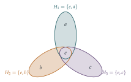

STEP II 1988、第9問
先に進む前に問題を読んでおこう。問題は STEP Support Programme の問題データベースにある： step.maths.org/questions/88-s2-q9
導入
これは本書でもっとも短い問題の一つであり、同時に大学の数学らしさがもっともよく表れた問題の一つでもある。題材は対称性を記述する数学の言語である群（group）で、問われているのはパズルのような問いである。すなわち、群をその内部にあるより小さな二つの群で覆い尽くすことはできるだろうか。答えは「できない」であり、証明はわずか3行で済む。ところが、小さな群が三つあれば覆うことができる。これは意外な事実である。
群論は2019年まで STEP の出題範囲に含まれており、現在では大学1年次の定番の内容である。この問題に必要なのは以下に述べる定義だけであり、群論の研究者がどのように考えるかを初めて味わうのにうってつけである。公理（axiom）だけを用いた、短く巧妙な議論である。
取りかかる前に
群とは、演算（積の形 \(ab\) で書く）をもつ集合 \(G\) であって、次の条件を満たすものである。
演算は結合的（associative）である：\((ab)c = a(bc)\)。
すべての \(a\) に対して \(ea = ae = a\) を満たす単位元（identity）\(e\) が存在する。
すべての \(a\) に対して、\(aa^{-1} = a^{-1}a = e\) を満たす逆元（inverse）\(a^{-1}\) が存在する。
例としては、加法に関する整数全体（正の数、負の数、0）、乗法に関する0でない実数全体、合成に関する正方形の回転全体などがある。\(G\) の部分群（subgroup）とは、\(G\) の部分集合 \(K\) であって、同じ演算に関してそれ自身が群となるものである。すなわち、\(K\) は \(e\) を含み、\(a, b \in K\) ならば \(ab \in K\) かつ \(a^{-1} \in K\) が成り立つ。
\(K\) が部分群で、\(a \in K\) だが \(b \notin K\) であるとき、\(ab\) は \(K\) に属しうるだろうか。
属しえない。もし \(ab \in K\) ならば、\(b = a^{-1}(ab)\) は \(K\) の二つの元の積となり、したがって \(K\) に属してしまう。このささやかな観察が証明のすべてである。
順を追って解く
段階 1 二つの部分群では覆えない
背理法（proof by contradiction）を用いる。\(G = G_1 \cup G_2\) であるが、\(G_1\) も \(G_2\) も \(G\) 全体ではないと仮定する。
\(G_1 \neq G\) であるから、\(G_1\) に属さない元が存在する。その元はどこに属さなければならないか。\(G_2\) についても同様である。次に、その二つの元を掛け合わせてみよ。
\(a \notin G_1\) を満たす \(a \in G\) をとる。すべての元は \(G_1\) または \(G_2\) に属するので、\(a \in G_2\) である。また \(b \notin G_2\) を満たす \(b \in G\) をとると、\(b \in G_1\) である。積 \(ab\) を考える。これは \(G_1\) または \(G_2\) に属する。
\(ab \in G_1\) の場合：\(b \in G_1\) であるから、\(a = (ab)b^{-1} \in G_1\) となり矛盾する。
\(ab \in G_2\) の場合：\(a \in G_2\) であるから、\(b = a^{-1}(ab) \in G_2\) となり矛盾する。
いずれの場合も矛盾が生じるので、\(G_1 = G\) または \(G_2 = G\) である。■
\(G\) が有限であることは一度も使っていないことに注意しよう。この結果はすべての群について成り立つ。
段階 2 三つの部分群なら覆える
三つの部分群の和集合（union）となる群であって、どの部分群も群全体ではないものを見つけよ。（ヒント：すべての元が自分自身の逆元であるような小さな群を試してみよ。）
クラインの四元群（Klein four-group）\(V = \{e, a, b, c\}\) を考える。規則は \(a^2 = b^2 = c^2 = e\) および \(ab = ba = c\)、\(bc = cb = a\)、\(ca = ac = b\) である。（具体的には、正方形でない長方形の四つの対称変換、すなわち何もしない変換、\(180^\circ\) の回転、二つの軸それぞれに関する鏡映である。あるいは、ビット \(0\)、\(1\) の組 \((x, y)\) 全体に \(2\) を法とする加法を考えたものでもよい。）その三つの部分群 \[H_1 = \{e, a\}, \qquad H_2 = \{e, b\}, \qquad H_3 = \{e, c\}\] はいずれも2個の元からなり、どれも群全体ではないが、合わせると \(V\) のすべての元を含む（図 6.6.1）。■

振り返り
証拠となる元を選び、組み合わせる。証明では、各部分群の外にある元を一つずつ選び、それらを掛け合わせた。この「それぞれから一つずつとって組み合わせる」という手法は、代数学できわめてよく使われる。
閉じていることの威力。用いた部分群の性質は、積と逆元について閉じている（closed）ということだけであった。
必要な仮定を確かめる。有限性は与えられていたが、使われなかった。ある仮定が不要であると気づくことも、証明を理解することの一部である。
背後にある数学
群は19世紀に、いくつもの方向から同時に生まれた。多項式の根の置換に関するガロア（Galois）の研究（第 6.4 節）、置換に関するコーシー（Cauchy）の研究、そして幾何学や結晶学における対称性の研究である。上で述べた抽象的な定義、すなわち三つの公理を満たすものはすべて群であるという定義は、19世紀末までに確立した。その威力は一般性にある。この問題のように公理から証明された定理は、数の群、行列の群、対称変換の群、置換の群のすべてについて同時に成り立つのである。今日、群はいたるところに現れる。素粒子物理学（標準模型は対称性の群の上に築かれている）、化学（分子の対称性がスペクトルを決める）、暗号理論（楕円曲線の群、第 1.9 節）、そしてルービックキューブの解法などである。
いくつの部分群が必要か
この問題からは自然な問いが生まれる。和集合が群全体となるような真部分群の個数の最小値はいくつか。この問題により、それが \(2\) になることはない。1926年に Gaetano Scorza は、群が三つの真部分群の和集合となるのは、クラインの四元群を「商」（quotient）としてもつときであり、かつそのときに限ることを示した。1994年に J. H. E. Cohn はこの一般的な問題を研究していくつかの予想を立て、1997年に M. J. Tomkinson は、この最小値が7となる群は存在しないことを証明した。一方、\(3\) から \(6\) までの数はすべて実際に現れる。述べるのは簡単だが驚くほど奥が深い、このような問いは群論に典型的なものである。
ベクトル空間
同様の議論により、実数上のベクトル空間（vector space）（平面や3次元空間など）は、有限個の真部分空間（proper subspace）の和集合には決してならないことが示される。つまり、平面は原点を通る有限個の直線の和集合にはならない。しかし有限体（finite field）上ではそれが可能である。二つの元からなる体の上の平面は、まさにクラインの四元群そのものであり、その三本の直線の和集合となっている。
思考のスキル
抽象代数学では、対象について、それが満たす公理以外には何もわからないことが多い。証明はそれらの公理だけを用いなければならない。
このため、議論はここでのように短く簡潔なものにならざるをえず、そしてあらゆる場合に適用できるものとなる。慣れるには少し時間がかかるが、これは大学1年次の代数学の授業でもっとも特徴的な体験の一つである。
次の一歩
群であることを確かめる。クラインの四元群の乗積表を書き出し、群の公理を確かめよ。また、乗法に関する群 \(\{1, \mathrm{i}, -1, -\mathrm{i}\}\) とは同じでないことを示せ。（ヒント：自分自身の逆元となっている元はどれか。）
巡回群。すべての元がある一つの元 \(g\) のべきであるとき、その群は巡回群（cyclic group）であるという。巡回群は、いくつあっても真部分群の和集合にはならないことを示せ。（ヒント：\(g\) を含む部分群はどれか。）
整数全体。\((\mathbb{Z}, +)\) が部分群 \(2\mathbb{Z}\)（偶数全体）と \(3\mathbb{Z}\)（\(3\) の倍数全体）の和集合ではないことを直接示せ。また、何らかの二つの真部分群の和集合になることはあるか。
平面内の直線。 発展 平面 \(\mathbb{R}^2\) は原点を通る有限個の直線の和集合ではないことを示せ。（ヒント：各直線は、放物線 \(y = x^2\) 上の点を原点以外には高々一つしか含まない。）
さらに学ぶために
M. A. Armstrong, Groups and Symmetry（Springer）。幾何学的な例を軸に展開される、美しい図版入りの入門書（『群と対称性』）。
Nathan Carter, Visual Group Theory（Mathematical Association of America）。図を通して群を学ぶ本で、大学入学前に最適である（『目で見る群論』）。
Peter Neumann, Gabrielle Stoy & Edward Thompson, Groups and Geometry（Oxford University Press）。オックスフォード大学1年次の古典的な教科書（『群と幾何学』）。